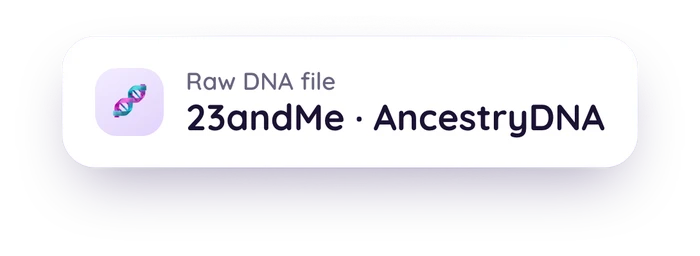

What's Really in Your 23andMe or AncestryDNA File
Downloading your raw data feels like downloading "your DNA." It isn't quite that. This guide covers what a raw genotyping file actually contains, what a chip physically measures versus what full sequencing does, why the file's genome build matters, and the honest limit on what a clean result can tell you.

Educational content about how consumer DNA files work, not medical or genetic-counseling advice. For anything about your own results, talk to a doctor or a certified genetic counselor.
Medical Disclaimer
This article is for educational and informational purposes only and does not constitute medical or genetic-counseling advice. It explains how consumer DNA files are built and what they can and can't show. It is not a substitute for consultation with a doctor or a certified genetic counselor, especially if you're weighing a personal or family health decision. If you have questions about a specific result, please talk to a qualified professional.
Quick Answer: What's Actually in the File?
A 23andMe or AncestryDNA raw data download is a plain text file listing a few hundred thousand specific DNA positions and what you have at each one.[1] It is not:
- Your full genome (that's roughly 3 billion positions, not a few hundred thousand)[2]
- A medical test result
- A complete list of every variant in any one gene
It's a curated, fixed list of positions a lab chip was built to read. That distinction matters for what a "clean" result can and can't tell you.
If you've ever opened your 23andMe or AncestryDNA download and expected something dramatic, the actual file is a little anticlimactic. It's a text document with a short header, then row after row of the same four things: a position ID, a chromosome, a coordinate, and two letters.[1] That's it. No sequence of your whole genome, no paragraph of interpretation, just a long spreadsheet of specific spots and what was found there.
That's genuinely useful for what it's built for. It's also easy to misread as something bigger than it is. Here's what's actually going on.
An Array Reads a List, Not the Whole Genome
23andMe and AncestryDNA don't sequence your DNA letter by letter. They use a genotyping array: a lab chip pre-loaded with probes for a specific, fixed set of positions, somewhere between about 550,000 and 700,000 of them depending on the chip version.[1][5] The chip checks exactly those positions and reports what it finds. It doesn't look anywhere else, because it was never built to.
Put that against the size of a full genome, about 3 billion base pairs across 23 chromosome pairs,[2] and the array is reading well under 1% of it. That's not a flaw in the product. Ancestry estimates and many trait and pharmacogenomic lookups only need specific, well-studied positions, and a fixed probe list is a fast, cheap way to check exactly those. It's just a different tool than full sequencing, which reads the letters in order rather than checking a predetermined list. Post 2 in this series covers what a sequencing file (a VCF) looks like instead.
Every row in your file has four parts:[1]
- rsID. A reference SNP ID, like rs429358, the standard label researchers and databases use for that exact position.
- Chromosome. Which of your 23 chromosome pairs (or your mitochondrial DNA) the position sits on.
- Position. The numeric coordinate on that chromosome.
- Genotype. The two letters you have at that spot, one from each parent, like AG or CT.
AncestryDNA's export carries the same basic information, sometimes with the two alleles split into their own columns instead of combined into one.[5] Different company, same underlying idea: a fixed list of positions, checked and reported.
Why the Genome Build Printed at the Top Matters
Near the top of your raw data file, in the header lines that start with #, there's usually a mention of a genome build: GRCh37 or GRCh38. These are two different, versioned coordinate systems for the human genome, maintained by the Genome Reference Consortium and released years apart.[2]
Here's why that matters practically: the same physical spot on your DNA can have a different numeric address depending on which build is being used. Position 41,276,045 on one build might not be the same physical letter as position 41,276,045 on the other. Any tool that reads your file, whether it's a research database, a trait calculator, or an app, needs to know which build your file uses so it can look up the right coordinate rather than a coincidentally similar-looking one on the wrong map.[2][3]
Most consumer arrays still report in GRCh37, an older build from 2009, even though GRCh38 (2013) fixed known gaps and errors in the earlier version.[3] Neither is wrong, they're just different maps, and a file that doesn't say which one it's using is missing a detail that actually matters for anything reading it downstream.
The Honest Number: How Little of Any One Gene Gets Checked
This is the part that's easy to miss. A "clean" result on an array-based report doesn't mean a gene was thoroughly checked. It means the specific positions on that array's list came back without a flagged variant, and the array's list is short.
23andMe's own FDA-authorized BRCA1/BRCA2 report is a clear, well-documented example. It checks for exactly three specific founder mutations most common in people of Ashkenazi Jewish descent. A peer-reviewed cohort study found that limiting evaluation to those three mutations missed more than 90% of pathogenic BRCA1/2 mutations in people without Ashkenazi Jewish ancestry, where a comprehensive panel identified more than 2,400 other distinct variants across the two genes.[4]
That's not a criticism of any one company, and it isn't a statement about anyone's individual risk. It's what a fixed, small probe list is always going to do: it can tell you about the exact positions it checks, and it has nothing to say about the rest of the gene it didn't check. The array simply wasn't built to look there. Reading those genes properly is work for a clinical lab and a certified genetic counselor, not for a consumer file.
What This Means for a "Negative" Result
Because of that gap, absence from a raw data file isn't the same thing as a clinical negative. If a variant of interest isn't listed in your file, it usually means one of two things: either you don't carry it, or the array's probe list never included that position in the first place. The file alone can't tell you which.[4]
This is why a tracking app that reads a raw data file, including Go Go Gaia's, should only ever report what it actually finds with attribution to a named source, and should never present an absent position as a tested-negative result. If your file doesn't include a database-catalogued position, the honest statement is that it wasn't checked, not that it came back clear.
How a VCF File Differs From the Flat File You're Used To
If you've also done a sequencing-based test, through a service like Nebula Genomics, Dante Labs, or Sequencing.com, you'll get a different kind of file: a VCF instead of a flat rsID-chromosome-position-genotype table. A VCF only lists the positions where your DNA differs from a reference genome, rather than reporting every position an array happened to probe.[3] It looks different on the page, but it runs into some of the same honesty questions this article just walked through: what build it's on, and what an absence in the file does and doesn't mean. The next post in this series walks through how to actually read one.
Whichever format you're holding, a tool that reads it can only be as useful as it is honest about what it's not looking at. A tracking app like Go Go Gaia takes the array-style raw export from 23andMe or AncestryDNA and shows you what it can attribute to a named public source like ClinVar or CPIC, without pretending a short probe list adds up to a full picture. Sequencing VCFs aren't accepted yet, so the format guide is there to help you read the one you have.
See what your own file actually shows
ClinVar's review-status system grades how much evidence backs a given variant classification, from a single lab's read to an expert-panel consensus. A tool that shows you that grading, rather than a flat yes or no, gives you a more honest picture of your own file.
Upload Your Raw Data FileThe Bottom Line
Your 23andMe or AncestryDNA raw data file is real, useful, and much smaller than it feels like it should be: a few hundred thousand curated positions, not a genome. Knowing that changes how you read any report built from it, including your own. A clean result on any one gene means the positions that were checked came back clear, not that the whole gene was ruled out. If you're holding a VCF instead of a flat file, our guide to reading a genome VCF file covers the sequencing version of this same question. And if you're wondering what a tracking app can honestly show you from the array export you already have, this walkthrough of what Go Go Gaia does and deliberately doesn't do with an uploaded DNA file is the next read.
Related Reading
Curious what your own file actually shows?
Upload it once in the web app and see which positions have a named source behind them.
Open the Web Uploader